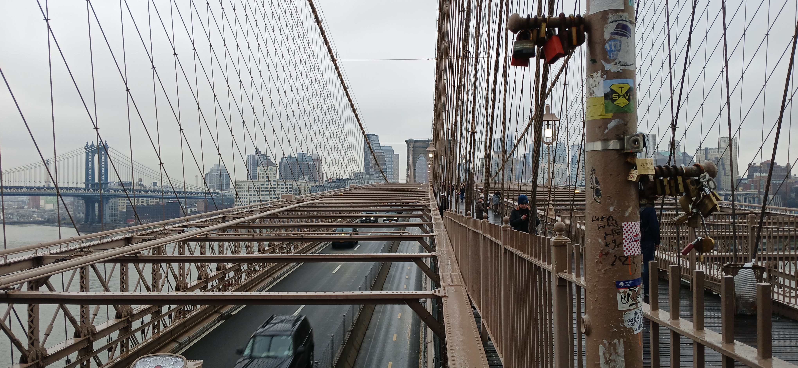

recently i haven't been able to get my mind off of new york
i've only been there once, but it's an experience i remember fondly. i have a very vivid memory of walking the streets of new york and feeling... invincible... like i could do anything... suddently it didn't matter who i was, what i did, where i went, i was just another passer by, someone you wouldn't look twice at, not like you could in such busy streets.
one thing i found facinating was when i had walked down the brooklyn bridge. there were hundreds maybe thousands of locks along all of fences, each one symbolizing two people's love and dedication towards each other. some were even shaped as hearts, some took numbers and some took keys, some where even on the railing overseeing the cars passing under them. that's a dedication so strong you have to be willing to get hurt for it. some had keys locked within them, but they weren't used, they didn't need to be, these people loved each other and nothing could break that.
